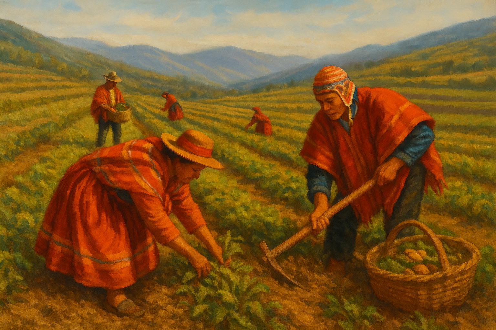
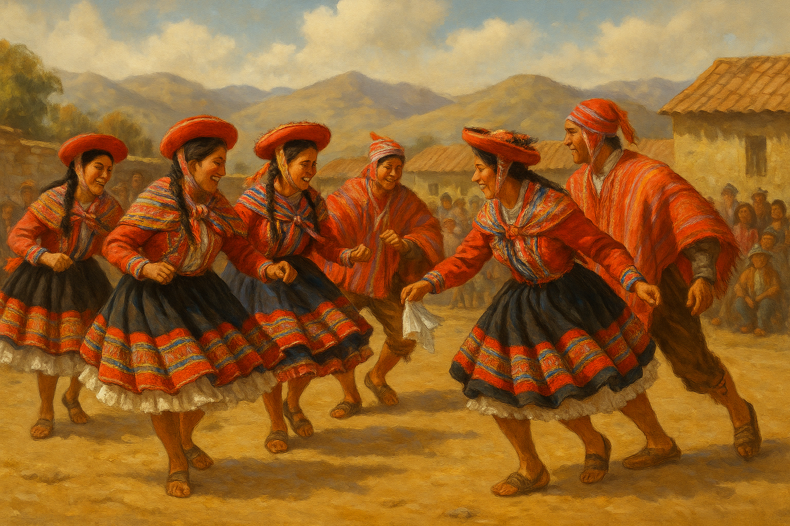
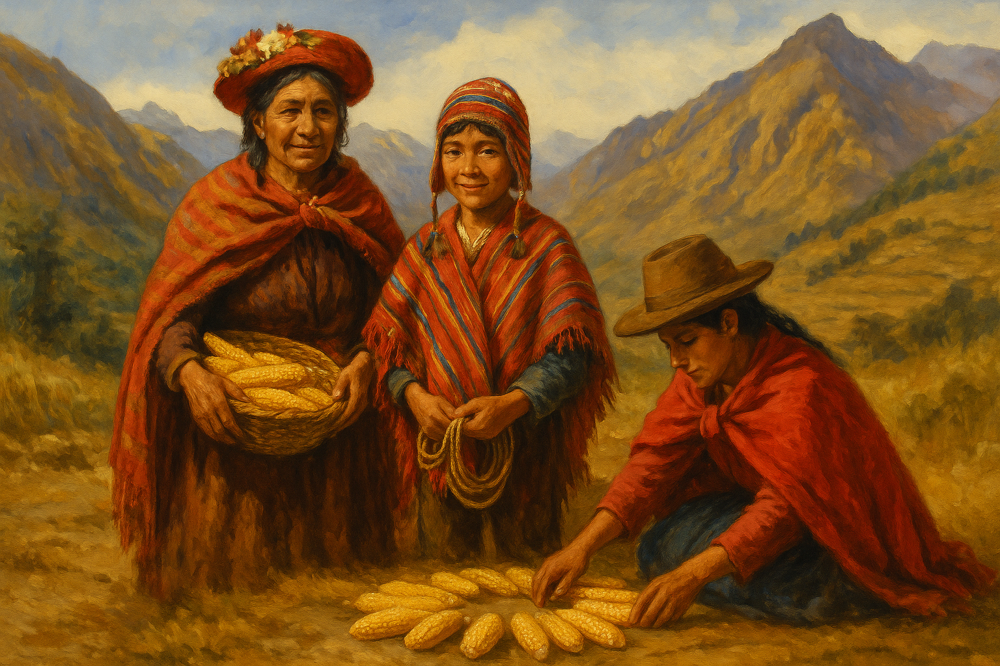
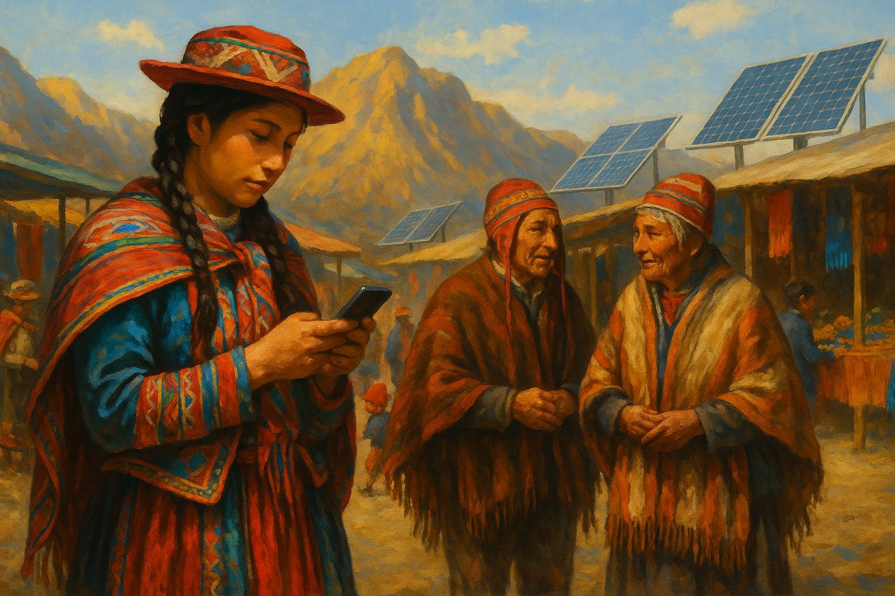

La cultura Quechua es una herencia viva
Historia
La etnia Quechua, originaria de los Andes, tiene una rica historia que se remonta a la época del Imperio Inca. A lo largo de los siglos, han mantenido sus tradiciones, idioma y formas de vida, a pesar de los desafíos y cambios impuestos por la colonización y la modernidad.
Cultura Quechua
La cultura Quechua es rica en tradiciones, música, danza y artesanía. Sus festivales, como Inti Raymi, celebran la conexión con la naturaleza y los ciclos agrícolas. La vestimenta tradicional, como el poncho y el chullo, refleja su identidad cultural y su relación con el entorno.
tradiciones
Las tradiciones Quechua incluyen prácticas agrícolas ancestrales, como la siembra y cosecha en terrazas, así como rituales para honrar a la Pachamama (Madre Tierra). La música y la danza son elementos esenciales en sus celebraciones, transmitiendo historias y valores de generación en generación.
Situación Actual
La comunidad Quechua enfrenta desafíos modernos, incluyendo la preservación de su idioma y tradiciones en un mundo globalizado. Sin embargo, continúan luchando por sus derechos y promoviendo su cultura a través de diversas iniciativas.
